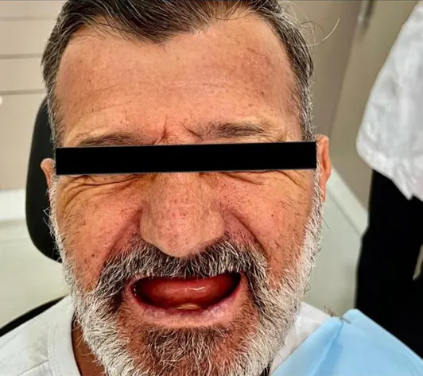
Reabilitação da arcada superior com prótese.
Implantes, próteses, lentes e clareamento com o Dr. Vinícius, cirurgião-dentista e técnico em prótese há 10 anos.
Sem custo e sem compromisso. Bairro Cordeiros, Itajaí.
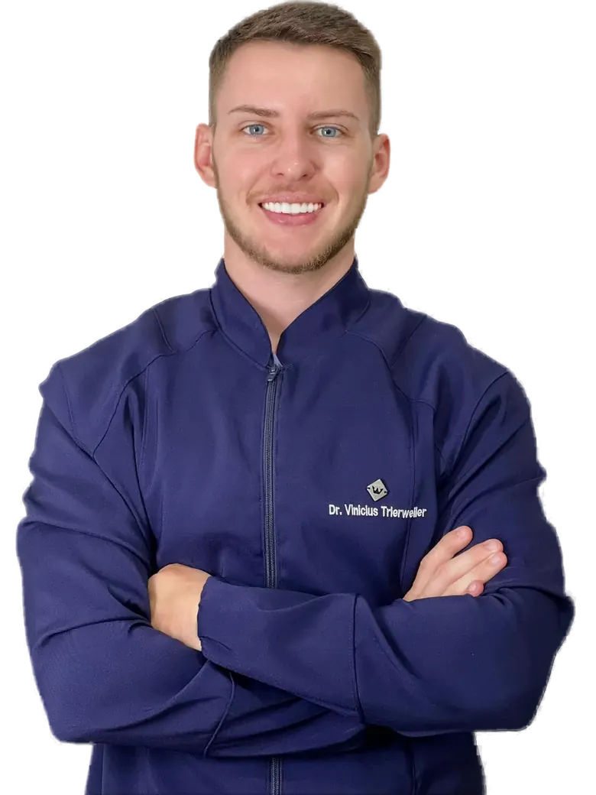
Dentista e técnico em prótese · 10 anos de experiência · Laboratório próprio · Sorriso planejado para o seu rosto · Acompanhamento até o fim · Avaliação gratuita em Itajaí
Arraste sobre cada foto para comparar o antes e o depois.

Reabilitação da arcada superior com prótese.
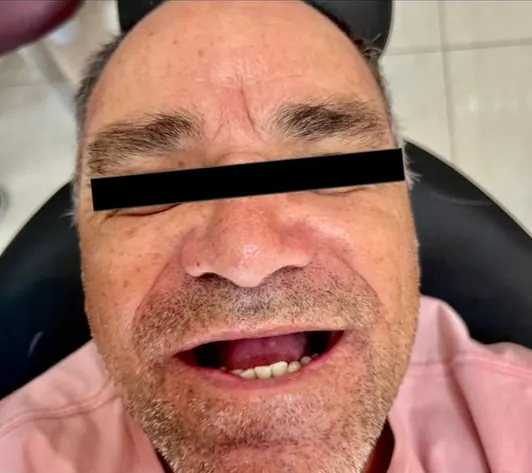
Reabilitação com prótese total.
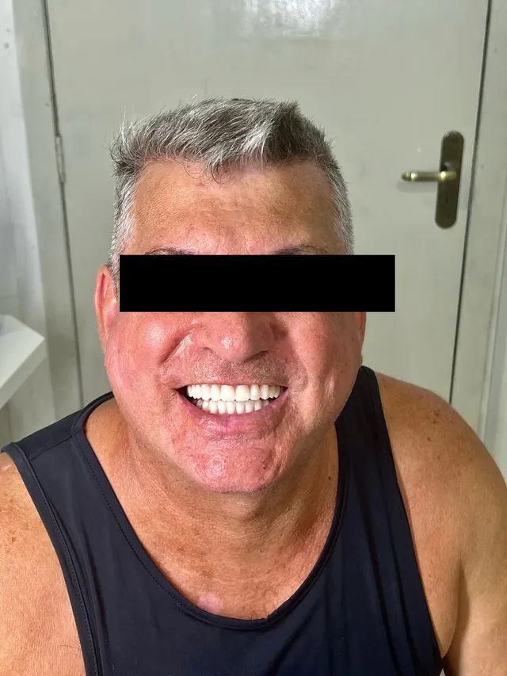
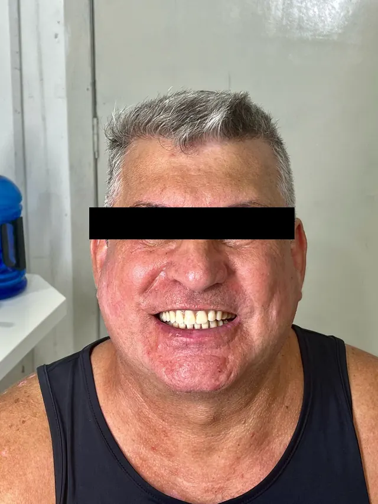
Troca da prótese antiga por uma nova, com dentes mais claros e proporcionais ao rosto.
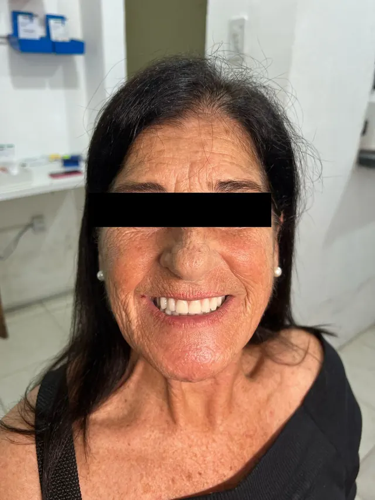
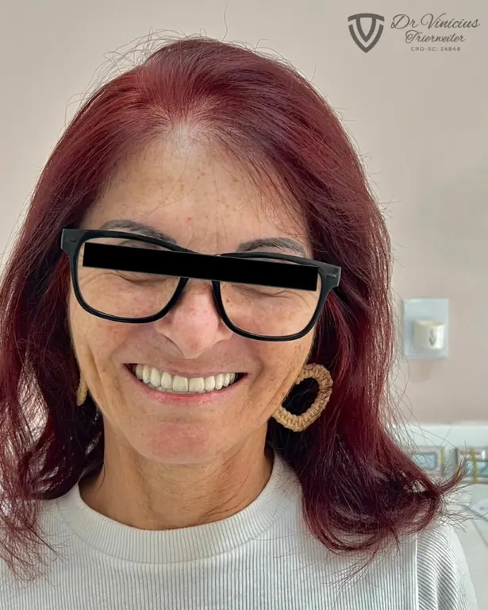
Dente faltando, prótese que solta ou dentes escurecidos tiram a vontade de sorrir. Na avaliação gratuita, o Dr. Vinícius mostra o caminho para você voltar a sorrir com segurança.
Agendar avaliação gratuitaImagens publicadas com autorização dos pacientes. Cada caso tem um planejamento próprio e os resultados variam de pessoa para pessoa.
Na avaliação gratuita, o Dr. Vinícius examina o seu caso e indica o tratamento mais adequado para você.
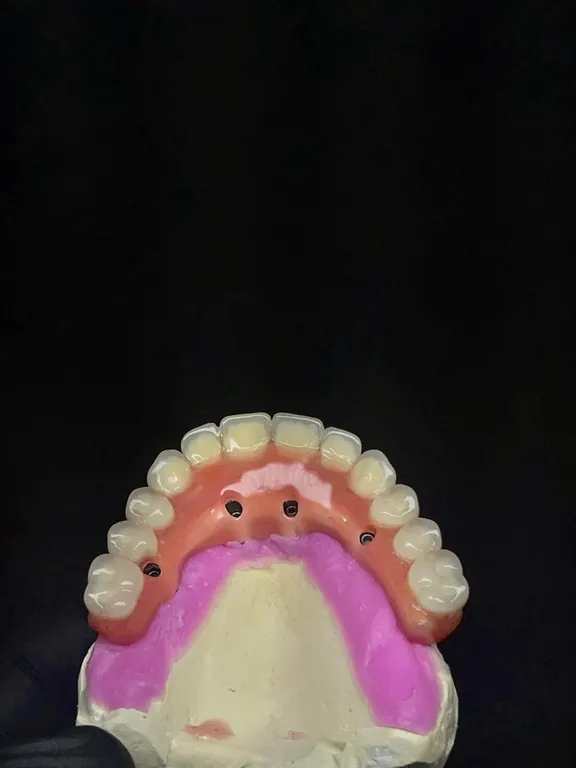
Perdeu um ou mais dentes e evita mastigar ou sorrir? O implante devolve um dente fixo, firme e com aparência natural.
Agendar avaliação gratuita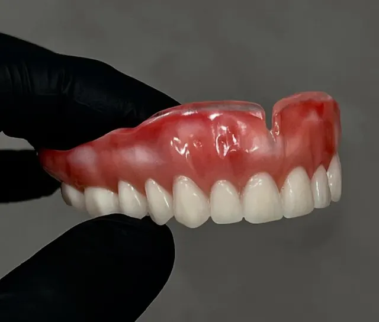
Prótese que solta, machuca ou parece artificial? Protocolo, dentadura e parcial feitos sob medida no laboratório próprio.
Agendar avaliação gratuita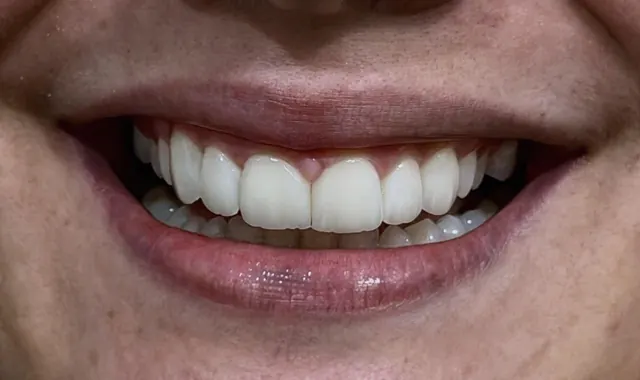
Incomodado com a cor, o formato ou o tamanho dos dentes? As lentes harmonizam o sorriso com naturalidade.
Agendar avaliação gratuita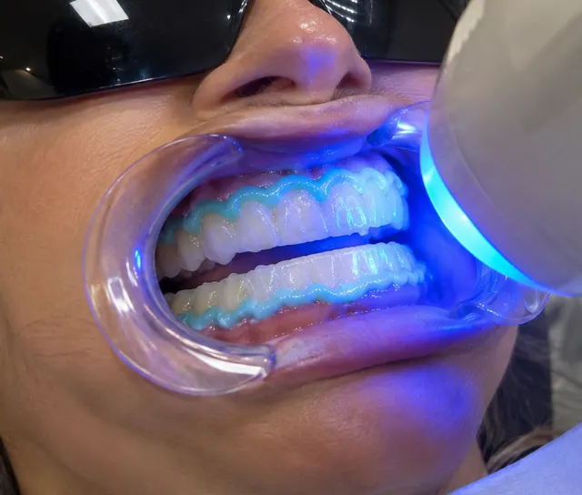
Dentes amarelados ou manchados? O clareamento deixa os dentes mais claros, com acompanhamento profissional.
Agendar avaliação gratuitaPróteses produzidas no laboratório próprio do Dr. Vinícius.
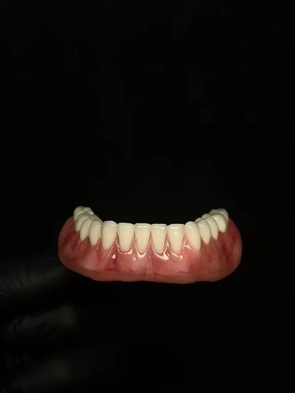
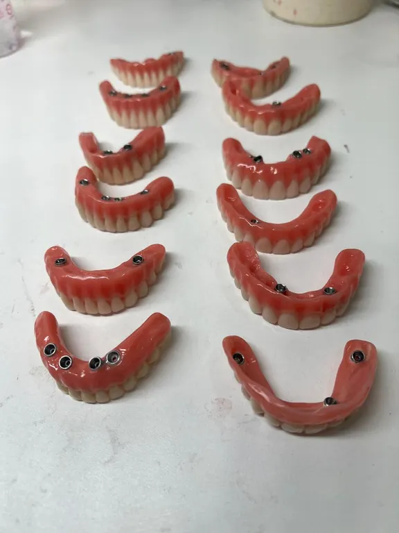
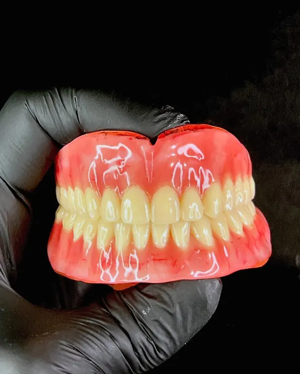
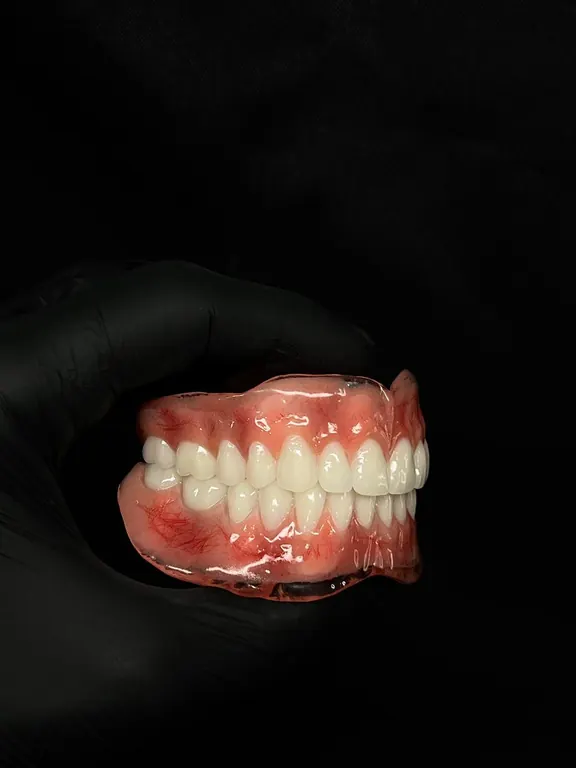
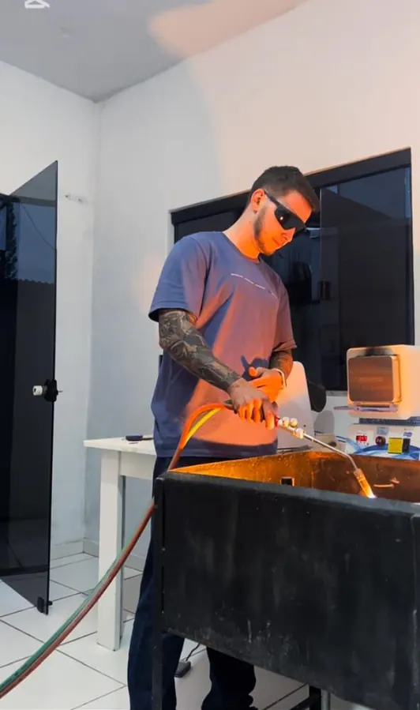
Começou na prótese dentária aos 17 anos e passou anos na bancada antes de se formar cirurgião-dentista. Hoje atende pacientes e mantém o próprio laboratório. Por isso entende cada detalhe do que faz no seu sorriso.
Formação
Conte rapidamente o que você precisa e escolha o melhor dia e horário.
No consultório, o Dr. Vinícius examina o seu caso com calma e responde todas as suas dúvidas.
Você recebe a explicação do tratamento indicado e decide, sem pressão, se quer seguir.
Não achou sua dúvida? Pergunte direto pelo WhatsApp.
Sim. A avaliação não tem custo e não obriga você a fazer o tratamento. É o momento de entender o seu caso e tirar dúvidas.
Implantes dentários, próteses (protocolo, dentadura e parcial), lentes de contato dental e clareamento. Na avaliação, o Dr. Vinícius indica o melhor caminho para o seu caso.
O próprio Dr. Vinícius, no laboratório da clínica. Quem atende você no consultório é quem confecciona e ajusta a peça.
Na maioria dos casos, sim. Na avaliação, o Dr. Vinícius verifica a sua situação e explica as opções possíveis para você.
A dentadura (prótese total) é removível e apoiada na gengiva. O protocolo é fixo, parafusado sobre implantes, e não sai da boca. A indicação depende de cada caso.
Não. A indicação depende da saúde dos dentes e da gengiva e do resultado que você busca. Na avaliação, o Dr. Vinícius explica se as lentes são indicadas para você.
Algumas pessoas sentem uma sensibilidade passageira durante o tratamento. Por isso o clareamento é feito com acompanhamento profissional, ajustado ao seu caso.
Rua Luiz da Silva, 199, bairro Cordeiros, Itajaí, Santa Catarina. Ver no mapa
A avaliação é gratuita e sem compromisso. Fale pelo WhatsApp e escolha o seu horário.